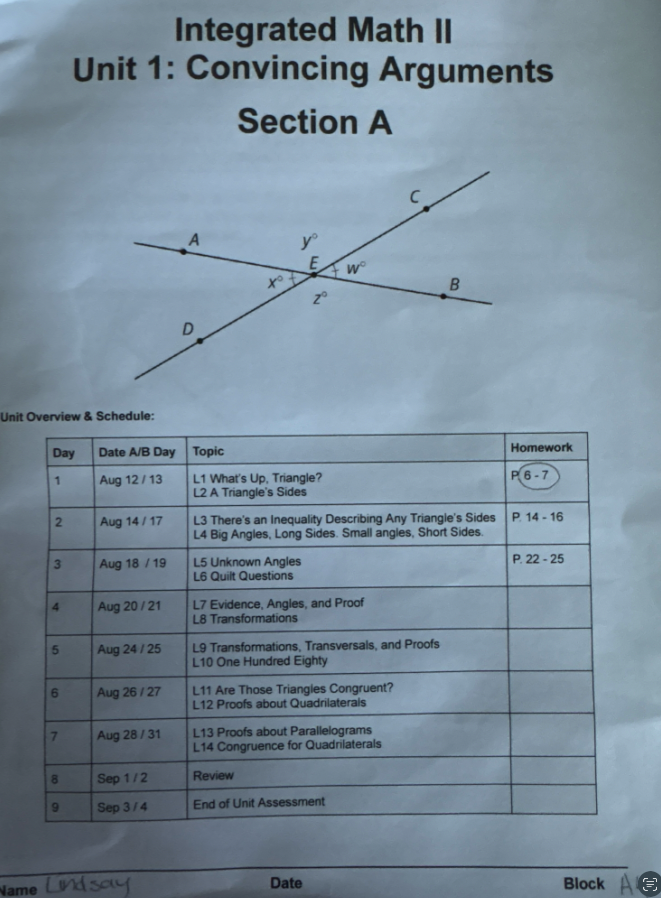

린지 학부모님, 안녕하세요.
보내주신 학교 진도표 덕분에 이번 학기 첫 단원 계획을 확실하게 세울 수 있게 되었습니다. 감사합니다.
진도표를 보니 첫 단원은 도형에서 ‘증명’을 다루는 단원입니다. 삼각형의 세 변 사이의 관계와 각도 사이의 관계를 살펴보는 것으로 시작해서, 도형을 움직여보는 변환, 두 삼각형이 같다는 것을 논리적으로 보이는 합동 증명, 마지막으로 사각형(평행사변형 등)의 성질을 증명하는 순서로 9월 초까지 진행됩니다.
마침 린지가 올여름 삼각형의 합동을 다시 짚어본 적이 있어서, 이번 단원과 자연스럽게 이어지는 부분이 많습니다. 그동안 익힌 내용을 실제 학교 진도 안에서 다시 확인하고 다지는 좋은 기회가 될 것 같습니다.
진도표에 나온 날짜에 맞춰 아래와 같이 진행하려고 합니다. 학교에서 배운 내용을 그 주 안에 바로 다시 짚어주는 방식이라, 배운 지 오래돼서 잊어버리는 일을 줄일 수 있습니다.
| Date | Topic | Format | Study Material (Big Ideas Math) |
|---|---|---|---|
| Thu 8/13 | Triangle basics & side relationships | Lesson | Congruent Triangles — Ch.12 §12.1–12.2 |
| Thu 8/20 | Triangle Inequality, angle–side relationships, angle puzzles (transversals) | Lesson + mini-check | Relationships Within Triangles — Ch.6 §6.5 Parallel & Perpendicular Lines — Ch.10 §10.1–10.2 |
| Thu 8/27 | Proof logic, Transformations, Triangle Sum Theorem, Triangle Congruence | Lesson + mini-check | Reasoning and Proofs — Ch.9 Transformations — Ch.11 / Congruent Triangles §12.3–12.6 |
| Sat–Mon 8/29–31 (new) | Quadrilateral & parallelogram proofs | Make-up lesson + mini-check | Quadrilaterals and Other Polygons — Ch.7 §7.1–7.3 |
| Wed 9/2 | Full-unit review | Review lesson | Mini-quiz 1–3 corrections + practice test |
9/3~4에 단원 평가가 있는데, 정작 그 주 목요일 정규 수업일이 시험 당일과 겹칩니다. 그래서 시험 직전 사각형 증명 부분을 짚어줄 시간이 부족해, 8/29~31 주말 중 하루에 짧게라도 보충 시간을 잡으면 좋겠습니다.
위 학습 일정은 보내주신 아래 진도표를 그대로 반영해 세운 것입니다.

증명 단원은 처음엔 낯설게 느껴질 수 있지만, 차근차근 짚어가면 논리적으로 생각하는 힘을 기르는 좋은 기회가 됩니다.
9월 초 단원 평가 전까지 잘 준비할 수 있도록 함께 챙기겠습니다.
원장 이상열 드림